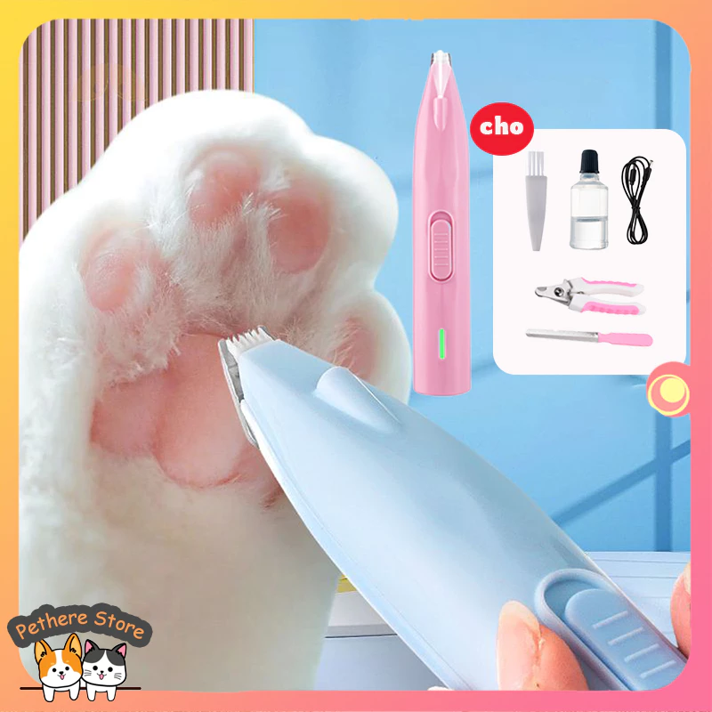

Tông Đơ Cạo Bàn Chân Chó Mèo Không Dây Có Đèn LED Soi Sáng Sạc USB Tiếng Ồn Thấp Máy Tỉa Lông Thú Cưng
80.000 - 120.000đ
Còn hàng: 120 sản phẩm

80.000 - 120.000đ
Còn hàng: 120 sản phẩm
Tính năng sản phẩm: Đèn Led phụ, chiếu sáng độ sâu của các khoảng trống, cắt tỉa miếng thịt sạch sẽ và loại bỏ các chấn thương do tai nạn. Làm sạch triệt để các khe hở, chặn các góc nhỏ dễ bị vi khuẩn sinh sản, tránh xa mối đe dọa của vi khuẩn. Lưỡi dao tinh tế 1cm không có góc chết để cắt tỉa. Công tắc trượt nhẹ, thân máy nhỏ gọn, dễ sử dụng. Răng lưỡi dao có hình chữ R, với các cạnh tròn và vát mép, tiếp xúc với da 360 ° để chống hư hại. Sạc USB thuận tiện, sạc và cắm mục đích kép, có thể được sử dụng trong khi sạc. Thiết kế giảm tiếng ồn nhiều lần, độ rung thấp và hoạt động tiếng ồn thấp, không làm phiền vật nuôi.
⭐⭐⭐⭐⭐ Chất lượng sản phẩm rất tốt, giá rẻ, đáng mua.